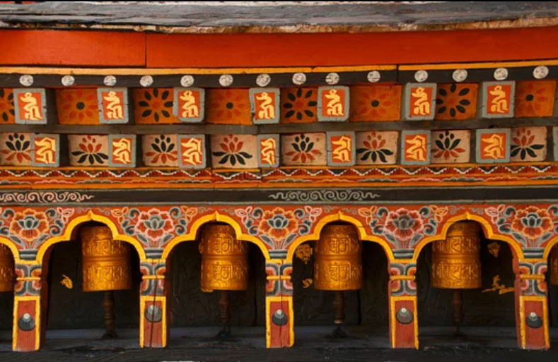
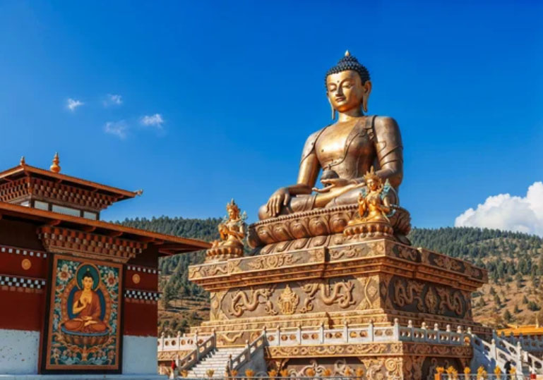
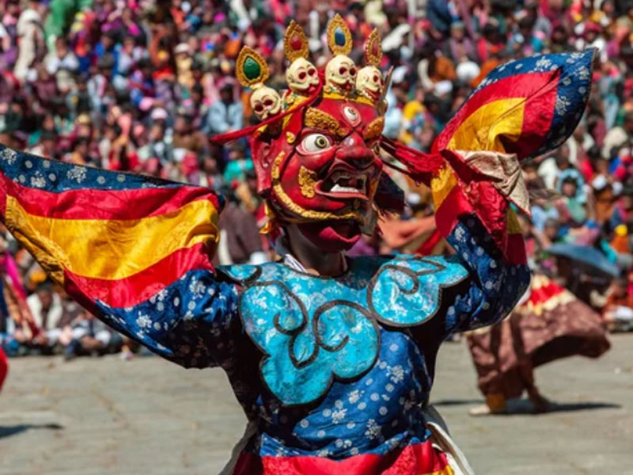
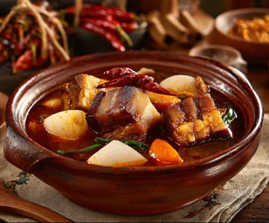

Kingdom of Stillness and Spirit
Bhutan: A journey through misty mountains, sacred monasteries, and the quiet rhythm of prayer.
From fluttering prayer flags to serene mountain valleys.
Kingdom of Prayer & Timeless Stillness
Iconic Landmarks
From cliffside monasteries to fortress-like dzongs and sacred mountain passes, journey through Bhutan’s spiritual landscapes, where prayer, nature, and tradition quietly shape an enduring world.
Paro Taktsang (Tiger’s Nest)
An iconic sacred site clinging to a sheer cliffside. A visit to Bhutan is simply incomplete without seeing this legendary monastery.
Punakha Dzong
A breathtaking fortress-monastery situated at the confluence of two rivers. It stands as a living symbol of Bhutan’s historical fusion of politics and religion.
Dochula Pass
Featuring 108 memorial stupas and panoramic Himalayan views, this pass perfectly captures Bhutan’s unique harmony between spiritual devotion and natural beauty.
Quiet Capitals & Sacred Valleys
Cities of Distinction
From the quiet rhythm of Thimphu to the serene valleys of Paro and the gentle warmth of Punakha, discover places where tradition, nature, and spirituality quietly shape everyday life in Bhutan.

Thimphu
A rare capital without traffic lights, where tradition and modern life coexist in quiet harmony. The Buddha Dordenma in this photo is a विशाल golden statue of Shakyamuni Buddha standing on a hill overlooking Thimphu, the capital of Bhutan.

Paro
A serene gateway town with the country’s only international airport, set in a breathtaking valley and home to the iconic Tiger’s Nest Monastery. This photo shows the Paro Tshechu Festival in Bhutan.
Punakha
A warm and tranquil former capital, known for its stunning dzong and picturesque riverside scenery.
Chili Heat & Mountain Traditions
From fiery chili and cheese dishes to simple, hearty meals, Bhutan’s cuisine reflects a life shaped by mountains, seasons, and quiet traditions.
Ema Datshi
A national dish of chili peppers simmered in cheese.

Phaksha Paa
A stir-fried dish of pork and radish with chili peppers.
Khapse
A traditional deep-fried snack made from kneaded wheat flour, similar to a biscuit.
ブータン王国の歴史
Kingdom of Faith & Enduring Harmony
From early Buddhist traditions to the unification under the Zhabdrung, and the rise of a peaceful monarchy,
Bhutan’s history is a quiet story of faith, resilience, and cultural continuity shaped by its mountain world.
古代
初期定住時代（紀元前2000年頃～）
考古学的な証拠から、ブータンにはこの時期から人々が定住していたとされています。
チベット仏教の到来（7世紀～）
チベット王ソンツェン・ガンポの布教活動により、仏教がブータンに伝わる。
中世
ドゥク派の台頭 （13世紀～16世紀）
チベット仏教のカギュ派の一派であるドゥク派がブータンで支持を集める。
シャブドゥン・ガワン・ナムゲルによる統一（1616年～）
高僧ガワン・ナムゲルがブータンを統一し、現在の国家の基礎を築く。
近世
ワンチュク王朝の成立（1907年）
ウゲン・ワンチュクが初代国王に選出され、現王国の基礎を確立。。
イギリスとの条約（1910年）
プナカ条約により、イギリスの保護下に入る。
近現代・現代
インドとの関係強化 （1949年）
インド・ブータン条約を締結し、独立を維持しつつインドとの結びつきを強化。
1964年に何が起きたのか
ジグミ・パルデン・ドルジ首相の暗殺: 近代化を主導していた当時の首相が暗殺されました。
宮廷革命の企てと首相職の廃止: その後の混乱の中で「宮廷革命」の企てが発覚したことを受け、第3代国王ジグミ・ドルジ・ワンチュクは首相職を廃止し、国王が直接統治を行う「親政」を開始しました。
首相職が廃止（1964年〜1998年まで不在）
国際連合加盟（1971年）
国際社会への参加を果たす。
国王から政府への権限委譲（1998年）
1972年に16歳で即位した第4代国王ジグミ・シンゲ・ワンチュクが、自らの強い意志で統治権限を国民が選ぶ閣僚へと移し始めました。
議会制民主主義への移行（2008年～）
2006年に王位を継承した第5代国王のジグミ・ケサル・ナムゲル・ワンチュク（2008年に戴冠式）が王制を維持しつつ、民主主義体制を導入。
現代ブータン（2008年～現在）
国民総幸福量（GNH）を重視した政策を推進。
2013年に、第2回総選挙、2018年に第3回総選挙が実施。2024年1月に第4回総選挙が実施
ブータンの歴史は、仏教文化と王制を中心に発展してきました。
ドゥク・ユル（雷龍の国）」の誇り
「ドゥク・ユル（Druk Yul）」という国名は、単なる呼び名ではなく、「外敵（特にチベット）に屈せず、独自の信仰と独立を守り抜いた」というブータン人のアイデンティティそのものを象徴しています。 ブータンの国旗に描かれている白い龍は、この「ドゥク・ユル」を象徴しています。
17世紀、建国の父シャブドゥンがチベットから亡命してきた際、当時のチベット政府（ゲルク派）は彼を追って何度もブータンへ侵攻してきました。
ブータン人は自分たちをチベット系であると認識しつつも、「チベットとは違う」ことを強調します。ブータン人は自らを「ドゥクパ（龍の人）」と呼び、チベットの文化圏に属しながらも、独自の国家を維持していることに高い誇りを持っています。